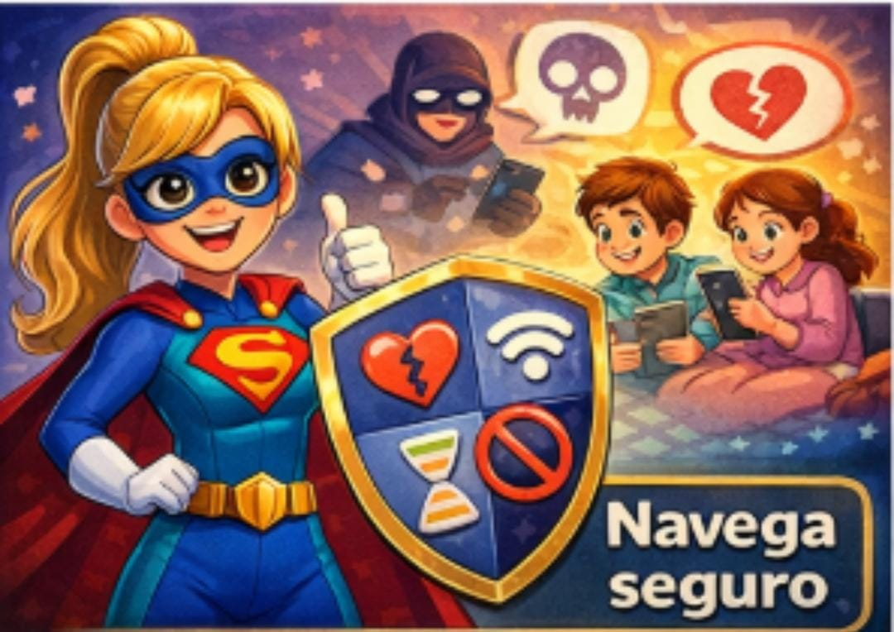
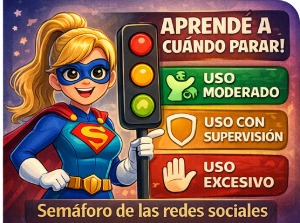
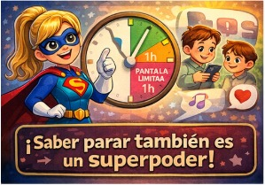
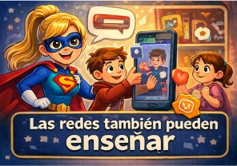
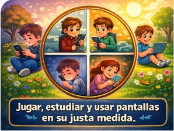

🌟 Bienvenida
¡Bienvenidos a Pequeños Conectados, Grandes Protegidos! Aquí acompañamos a las familias en el mundo digital, compartimos consejos y beneficios sobre el uso seguro de la tecnología y redes sociales para niños. Nuestro objetivo es que los pequeños crezcan seguros, informados y equilibrados.
En este espacio encontrarás artículos, guías y planes de trabajo pensados para padres y educadores, con el fin de proteger, educar y acompañar a los niños mientras descubren el mundo digital.
💬 Tu opinión
📞 Contacto
Síguenos en nuestras redes sociales: